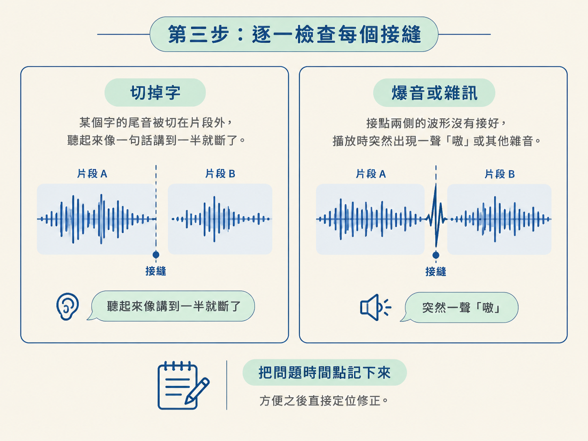

這是「剪掉靜音與 NG 重錄」流程的最後一關。前面你已經準備好規則、指令、逐字稿與保留區間；現在要做的是，在正式編碼前先確認剪輯計畫，編碼後再驗收成品。
走完這一課，你會得到一支可以交給下一步使用的 cut.mp4。在交件前，你會確認三件事：該留的內容沒有誤刪、每個接縫沒有切掉字或產生爆音，以及成品總長度符合預期。
整條流程可以想成兩道門。第一道門在剪之前：先看並排稿，批准「要怎麼剪」。第二道門在剪之後：逐一聽接縫、核對總時長，確認「剪出來的東西真的能用」。
這樣做，是因為重新編碼可能很花時間，而剪錯的地方常常小得像鞋底沾到的一粒沙：少半個字、接點突然爆一聲，或總長度無聲無息地少了一截。不先檢查，往往要到成品交出去才發現。
開始前，你需要已經有逐字稿和保留區間；也可以先跑過一次編碼。接著依序完成下面的步驟。
不要一決定保留區間，就立刻開始編碼。先請 agent 產出一份並排稿，把「目前的逐字稿」和「建議的乾淨稿」放在一起，讓你在付出編碼成本之前，先把整份剪輯計畫讀過一遍。
一份完整的並排稿通常包含三個部分：
審核時，先看重複講過的句子，確認真的只留下最後一版。接著檢查原本要保留的句子有沒有被誤刪。這一步像在施工前先看藍圖：如果藍圖就畫錯了，後面蓋得再快，也只會更快地蓋錯。
確認並排稿沒有問題後，才使用上一課的 trim／atrim 加 concat 指令開始編碼。
因為你已經先看過剪輯計畫，這一步通常不需要再處理大方向的重工。接下來要盯的是兩類細節：片段接起來時有沒有切掉字或產生雜音，以及實際輸出的總長度是否正確。
編碼完成後，先聽接縫。接縫就是兩個片段接起來的地方，也是剪輯最容易露出破綻的位置。
常見問題主要有兩種：

檢查時，特別留意原本就不確定的片段，並把問題的時間點記下來。例如：
這樣修正時就能直接定位，不必每次都從頭重聽整支影片。
如果你發現某個接縫前面還殘留著前一次失敗的字尾，通常表示保留區間的起點切得太早，把上一段的尾巴一起吃進來了。如果是這樣，就把這個區間的起點往後推一點，把失敗的字尾排除掉。
接縫聽完後，再檢查成品長度。這裡有一個容易被忽略的陷阱：如果保留區間要求的結束時間超過來源影片真正的長度，ffmpeg 可能會直接截斷，而且不會報錯。
結果是，你以為某段剪了 30 秒，實際上可能只有 28 秒，卻不知道少的是哪裡。因此，編碼後要用 ffprobe 讀出成品的實際長度：
ffprobe -v error -show_entries format=duration -of default=noprint_wrappers=1 "$OUT"接著，把每個保留區間的 end 減去 start，再將結果加總。ffprobe 讀出的成品長度，應該和這個總和幾乎一致。
如果兩者差了一小段，先回頭檢查是不是有某個區間的結尾超出了來源影片長度。這種錯誤就像量布時多畫了一截，剪刀最後只能照實際布料長度停下來。
另外，接縫兩側要保留一小段呼吸。範本建議區間兩側各留約 0.04 秒，讓音訊接點比較平滑；這個值不要低於 0.02 秒，否則接起來會太生硬。
發現「這個接縫切到了字」或「這種重複句以後要往後多留 0.06 到 0.10 秒」時，不要只修眼前這支影片。把這些觀察回饋給 agent，寫進剪輯 skill 的規則裡，下一支素材就能直接套用。
像能釘選時間碼的 review 工具，標註問題時會把每則留言和對應時間點一起打包。你把整批留言交給 agent，它就同時知道「哪裡錯」以及「應該怎麼改」。累積幾次之後，這套規則會逐漸校準成更符合你說話習慣的剪輯方式。
所以這一步除了修片，也在訓練你的工具。
完成這兩段驗收後，你應該有：
cut.mp4。這支成品也通過了 seek 格式的檢查，可以直接交給下一步的 HyperFrames 做動畫。
驗收分成剪之前與剪之後。剪之前，先看並排稿：把原始稿與建議稿放在一起，劃掉重錄內容，並附上剪點表；確認計畫正確後再編碼，避免昂貴的重工。剪之後，逐一聽接縫有沒有切掉字或產生爆音，記下問題時間點，再用 ffprobe 核對總長度，因為超出來源長度的區間可能會被 ffmpeg 無聲截斷。最後，把修正回饋給 agent 並寫進 skill，讓下一支素材剪得更準。
到這裡，「剪掉靜音與 NG 重錄」這條線就完成了：從規則、指令、seek 格式，一路走到驗收。你現在手上有一支能被 HyperFrames 精準取用的 cut.mp4，可以往下進入設計系統與動畫階段。